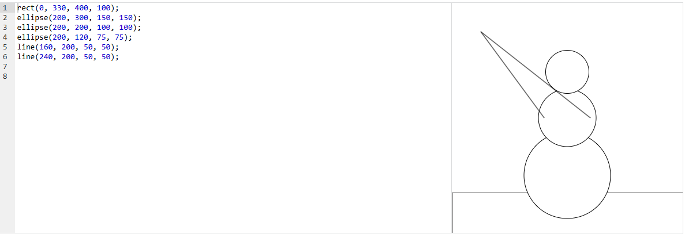

Muñeco de nieve que saluda
El muñeco de nieve levanta los brazos con dos líneas. Además del dibujo original, esta versión web incluye un botón que activa una animación de saludo usando draw().
Resultado
Código
Código del proyecto de Khan Academy. En js/muneco.js está envuelto en setup() para funcionar con p5.js en una página web.
rect(0, 330, 400, 100);
ellipse(200, 300, 150, 150);
ellipse(200, 200, 100, 100);
ellipse(200, 120, 75, 75);
line(160, 200, 50, 50);
line(240, 200, 50, 50);El bloque de arriba es el dibujo original. Para la animación, el mismo código se encapsula en una función escena(manoX, manoY) que draw() llama en cada fotograma moviendo el punto de la mano con sin() y cos(). Puedes ver el archivo completo en js/muneco.js.
Conceptos que se practican
| Elemento | Qué hace |
|---|---|
line() | Los brazos son líneas que van del torso (160, 200) y (240, 200) hacia la mano en (50, 50). |
draw() | Función de p5.js que se repite constantemente; es la base de toda animación. |
sin() y frameCount | Una función seno que depende del número de fotograma produce un movimiento oscilante suave. |
loop() y noLoop() | Inician o detienen el ciclo de draw(); el botón los alterna. |
Captura del editor original
